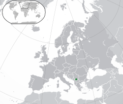

Kultura e Kosovës
Kultura kosovare ngërthen në vete kulturën e kombit shqiptar, si trashëguese të kulturës vendëse ilire, të ndikuar më vonë kryesisht nga kultura romake dhe osmane e më pak nga ajo sllave. Përcaktimi kulturor kosovar është perëndimor, mirëpo ruan në vete elemente konservatore evropiane dhe disa veti të kulturës lindore, të përfituara nga shekujt e sundimit osman. Ndikimi i thellë vërehet sidomos nga e drejta dokesore e shqiptarëve, e përkufizuar nga katër parime — nderin vetjak, barazinë e vetëve, lirinë e veprimit në kuadër të ligjit, si dhe besën
Shëtitje përmes Kosovës


Vallet Tradicionale
Vallet janë pjesë e rëndësishme e festave tona popullore.

Kullat e Vjetra
Arkitektura e vjetër e kullave reflekton historinë tonë.

Veshjet Kombëtare
Veshjet tradicionale simbolizojnë identitetin kombëtar.
Republika e Kosovës
Republic of Kosovo
Republika e Kosovës (Albanian)
Република Косово / Republika Kosovo (Serbian)
.png)
Flamuri i Kosovës
Flamuri i Kosovës u miratua më 17 shkurt 2008, në ditën e shpalljes së pavarësisë. Ai ka një sfond blu, me një hartë të artë të Kosovës në qendër dhe gjashtë yje të bardha harkuar mbi të, që përfaqësojnë gjashtë komunitetet kryesore në vend.
Emblema e Kosovës
Emblema e Kosovës ka një mburojë blu me një hartë të artë të vendit në mes dhe gjashtë yje të bardha sipër saj. Dizajni i saj është i ngjashëm me flamurin dhe simbolizon shtetësinë dhe unitetin e Kosovës.

Vendndodhja e Kosovës
Kosova ndodhet në Evropën Juglindore, në rajonin e Ballkanit Perëndimor. Kufizohet me Serbinë në veri dhe lindje, Maqedoninë e Veriut në jug, Shqipërinë në jugperëndim dhe Malin e Zi në perëndim. Kryeqyteti i Kosovës është Prishtina.